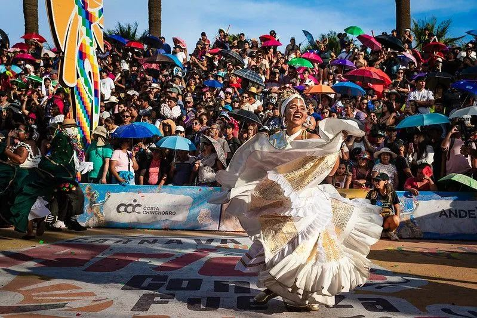

Festivals · Culture
Carnaval Andino con la Fuerza del Sol 2027
- Dates
- –
- Venue
- Avenida Comandante San Martín
- Location
- Arica, Chile
- Format
- In-person
- Category
- Culture
- Industry
- Carnival / Andean culture
- Organiser
- Municipalidad de Arica
- Expected attendance
- 160,000
- Official website
- https://aricafuerzadelsol.cl/
About
71 troupes parade along the seafront avenue. Chile dates are local (mainland Chile time: UTC-3 in the southern summer, UTC-4 in winter; Easter Island is two hours behind the mainland).
Topics: Andean dance, carnival, brass bands, indigenous culture.
Arica municipality (organiser): the carnival 'congrega a más de 160 mil espectadores' and over 20,000 dancers and musicians.
Sources
- Official — https://aricafuerzadelsol.cl/
- Previous listing (Municipalidad de Arica news) — https://www.muniarica.cl/noticias/publicacion/municipio-y-dirigentes-preparan-calendario-de-eventos-para-darle-una-bienvenida-en-grande-el-carnaval-2027
- Official — https://www.muniarica.cl/noticias/publicacion/en-el-sorteo-del-carnaval-de-arica-el-alcalde-vargas-hizo-un-potente-llamado-a-trabajar-en-unidad
- Official — https://www.muniarica.cl/noticias/publicacion/arica-ya-es-carnaval-con-pawa-ancestral-y-la-fuerza-del-tata-inti-parte-el-carnaval-de-arica-con-la-fuerza-del-sol-2026